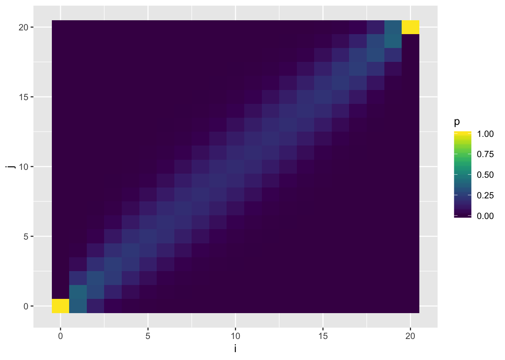
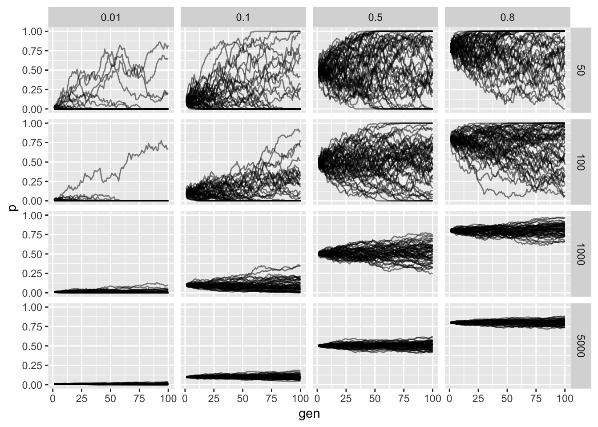

Last updated: 2017-03-06
Code version: c7339fc
A basic knowledge of:
A major goal of population genetics is to understand the effect of various evolutionary forces, such as genetic drift, selection, mutation and migration, on the change in allele frequencies within a population. Named after early pioneers of theoretical population genetics, Sewall Wright and Ronald A. Fisher, the Wright-Fisher model describes the sampling of alleles in a population with no selection, no mutation, no migration, non-overlapping generation times and random mating. Of course, real populations in nature do not adhere to these assumptions, yet the Wright-Fisher model provides a tool for studying how introducing more complex evolutionary forces can effect a relatively simple model.
Let \(A\) and \(a\) denote two alleles segregating at a locus in a given population. The Wright-Fisher model is a discrete-time Markov chain that describes the evolution of the count of one of these alleles over time. Let \(X_t\) be the count of the \(A\) allele in a population with \(N\) diploid individuals at generation \(t\). The state space of this Markov chain is the set of possible counts of the \(A\) allele i.e. \(X_t \in \{0, 1, \dots, 2N\}\). Each generation, a collection of alleles are sampled, with replacement, from the current population at generation \(t\) to form a new population at generation \(t + 1\). This process describes the binomial sampling of alleles each generation, which allows us to write the probability transition matrix for the Markov chain as:
\[P_{ij} = {2N \choose j} (\frac{i}{2N})^{j} (1 - \frac{i}{2N})^{2N - j}\]
In other words the probability of transitioning from an allele count of \(i\), at generation \(t-1\), to an allele count of \(j\), at generation \(t\), can be computed from binomial probability mass function with size \(2N\) and success probability being equal to the frequency of the \(A\) allele at time \(t-1\):
\[X_{t} \mid X_{t-1} = x_{t-1} \sim Binomial(n = 2N, p = \frac{x_{t-1}}{2N})\]
One useful property to know is the expected value of \(X_t\) at any time throughout the process. This can be computed using the fact that the expectation of a binomial distribution is \(np\) and the law of total expectation:
\[E(X_t) = E(E(X_t \mid X_{t-1})) = E(2N \frac{X_{t-1}}{2N})\] \[= E(X_{t-1}) = E(E(X_{t-1} \mid X_{t-2})) = E(2N \frac{X_{t-2}}{2N})\] \[= E[X_{t-2}] = \dots = X_0\]
We see that the expected value of the Wright-Fisher process at any time-point is just the count of the \(A\) allele in the first generation. If \(Y_t\) is the frequency of the \(A\) allele at time \(t\) then the above result can be extended such that:
\[E(Y_t) = Y_0\]
It is a little bit harder to find the variance of \(X_t\) but it is useful to know and will be important for later tutorials. Recall from basic probability theory the definition of the variance:
\[Var(X_t) = E(X^2_t) - E(X_t)^2\]
We have shown about that \(E(X_t) = X_0\) thus:
\[Var(X_t) = E(X^2_t) - X^2_0\]
Using the law of total variance and the mean and variance of the binomial distribution:
\[E(X^2_{t}) = E(E(X^2_{t} \mid X_{t-1})) = E(Var(X_{t} \mid X_{t-1}) + E(X_{t} \mid X_{t-1})^2)\] \[ = E(2N\frac{X_{t-1}}{2N}(1 - \frac{X_{t-1}}{2N}) + (2N\frac{X_{t-1}}{2N})^2) \] \[ = E(X_{t-1} - \frac{X^2_{t-1}}{2N} + X^2_{t-1}) = E(X^2_{t-1} - \frac{X^2_{t-1}}{2N} + X_{t-1})\] \[= E(X^2_{t-1}) (1 - \frac{1}{2N}) + E(X_{t-1})\]
thus we can rewrite \(E(X^2_{t})\) as:
\[Var(X_{t}) + X^2_0 = (Var(X_{t-1}) + X^2_0) (1 - \frac{1}{2N}) + X_0\] \[= Var(X_{t-1})(1 - \frac{1}{2N}) + X^2_0 - \frac{X^2_0}{2N} + X_0\] \[\Rightarrow Var(X_{t}) = Var(X_{t-1})(1 - \frac{1}{2N}) + X_0(1 - \frac{X_0}{2N})\]
solving the above recurrence results in:
\[Var(X_{t}) = 2N X_0 (1 - \frac{X_0}{2N}) (1 - (1 - \frac{1}{2N})^t)\]
and finally in terms of the frequency of the \(A\) allele:
\[Var(Y_{t}) = Y_0 (1 - Y_0) (1 - (1 - \frac{1}{2N})^t)\]
Using the above moments we can compute some interesting features of the Markov chain which also have important biological relevance. Recall that absorbing states of a Markov chain are the states, once entered, can never be exited. More formally, if \(X^{*}_t\) is an absorbing state then:
\[P_{\{i = {X^{*}_t}\}j} = 0\]
In the Wright-Fisher model we can intuitively see that the fixation or loss of an allele are absorbing states i.e. if all of the individuals in the population carry two copies of the \(A\) allele or \(a\) allele the allele of the other type cannot be sampled without mutation or migration. The absorbing states in the Wright-Fisher model are \(X^{*}_t \in \{0, 2N\}\). We can compute the probability of fixation of the \(A\) allele, transitioning to the absorbing state \(X^{*}_{t+1} = 2N\) from any other state, using the conditional expectation described above:
\[E(X^{*}_{t+1} \mid X_t = i) = 2NP(X_{t+1} = 2N \mid X_t = i) \] \[\Rightarrow i = 2NP(X_{t+1} = 2N \mid X_{t} = i)\] \[\Rightarrow P(X_{t+1} = 2N \mid X_{t} = i) = \frac{i}{2N}\]
Therefore we can reciprocally write the probability of losing the \(A\) allele (fixation of the \(a\) allele):
\[ P(X_{t+1} = 0 \mid X_{t} = i) = 1 - P(X_{t+1} = 2N \mid X_{t} = i) = 1 - \frac{i}{2N}\]
We can see that the probability of fixation or loss of an allele in a pure drift Wright-Fisher model only depends on the previous count of the allele and the effective population size.
Visualization of the probability transition matrix can provide some intuition on the how the process can proceed given different starting points.
library(ggplot2)
library(dplyr)
library(tidyr)
library(viridis)
N <- 10 # effective population size
# fill up the probility transition matrix
P <- matrix(NA, ncol = 2*N + 1, 2*N + 1)
P_df <- data.frame()
for(i in 0:(2*N)){
for(j in 0:(2*N)){
# add to matrix for examples
P[i+1, j+1] <- dbinom(j, 2*N, (i / (2*N)))
# add to data.frame for viz below
P_df <- bind_rows(P_df, data.frame(i = i, j = j, p = P[i+1, j+1]))
}
}
# plot it up!
p <- ggplot(P_df, aes(x = i, y = j, fill = p)) +
geom_tile() + scale_fill_viridis(option="D")
p
Lets simulate a grid of parameter values to explore the concepts introduced above:
# data.frame to be filled
wf_df <- data.frame()
# effective population sizes
sizes <- c(50, 100, 1000, 5000)
# starting allele frequencies
starting_p <- c(.01, .1, .5, .8)
# number of generations
n_gen <- 100
# number of replicates per simulation
n_reps <- 50
# run the simulations
for(N in sizes){
for(p in starting_p){
p0 <- p
for(j in 1:n_gen){
X <- rbinom(n_reps, 2*N, p)
p <- X / (2*N)
rows <- data.frame(replicate = 1:n_reps, N = rep(N, n_reps),
gen = rep(j, n_reps), p0 = rep(p0, n_reps),
p = p)
wf_df <- bind_rows(wf_df, rows)
}
}
}
# plot it up!
p <- ggplot(wf_df, aes(x = gen, y = p, group = replicate)) +
geom_path(alpha = .5) + facet_grid(N ~ p0) + guides(colour=FALSE)
p
The horizontal facet is the starting frequency and the vertical facet is the effective population size. We see that as we increase the population size the less noisy the allele frequency trajectory as expected from our derivation. Additionally we see that probability of fixation or loss is more likely when lower and higher starting allele frequencies (again as expected).
sessionInfo()R version 3.3.2 (2016-10-31)
Platform: x86_64-pc-linux-gnu (64-bit)
Running under: Ubuntu 14.04.5 LTS
locale:
[1] LC_CTYPE=en_US.UTF-8 LC_NUMERIC=C
[3] LC_TIME=en_US.UTF-8 LC_COLLATE=en_US.UTF-8
[5] LC_MONETARY=en_US.UTF-8 LC_MESSAGES=en_US.UTF-8
[7] LC_PAPER=en_US.UTF-8 LC_NAME=C
[9] LC_ADDRESS=C LC_TELEPHONE=C
[11] LC_MEASUREMENT=en_US.UTF-8 LC_IDENTIFICATION=C
attached base packages:
[1] stats graphics grDevices utils datasets methods base
other attached packages:
[1] viridis_0.3.4 tidyr_0.5.1 dplyr_0.5.0
[4] ggplot2_2.1.0 knitr_1.15.1 MASS_7.3-45
[7] expm_0.999-0 Matrix_1.2-8 workflowr_0.4.0
[10] rmarkdown_1.3.9004
loaded via a namespace (and not attached):
[1] Rcpp_0.12.9 git2r_0.18.0 plyr_1.8.4 tools_3.3.2
[5] digest_0.6.12 evaluate_0.10 tibble_1.2 gtable_0.2.0
[9] lattice_0.20-34 shiny_1.0.0 DBI_0.5-1 yaml_2.1.14
[13] gridExtra_2.2.1 stringr_1.2.0 gtools_3.5.0 rprojroot_1.2
[17] grid_3.3.2 R6_2.2.0 reshape2_1.4.1 magrittr_1.5
[21] backports_1.0.5 scales_0.4.0 htmltools_0.3.5 assertthat_0.1
[25] mime_0.5 xtable_1.8-2 colorspace_1.2-6 httpuv_1.3.3
[29] labeling_0.3 stringi_1.1.2 munsell_0.4.3 This site was created with R Markdown